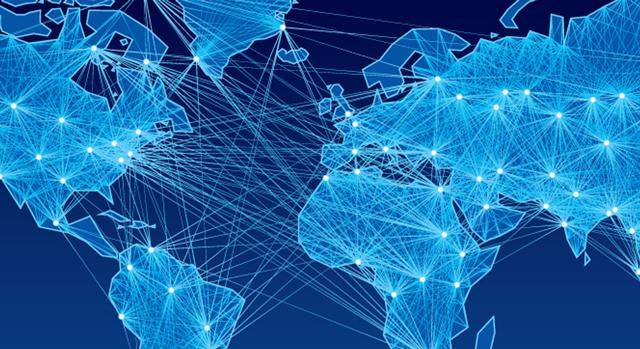

A globalização é um processo de expansão econômica, política e cultural a nível mundial. Sua origem remete ao período das Grandes Navegações no século XVI, momento em que as trocas comerciais se ampliaram para outras nações.
No último século, o processo de globalização se acelerou bastante devido à Terceira Revolução Industrial (ou Revolução Técnico-Científico-Informacional). Ela promoveu a evolução das tecnologias de transporte e comunicação, de modo que a distância e as fronteiras geográficas se tornam cada vez menores. Isso contribuiu diretamente para o aumento das trocas comerciais entre os países, sobretudo para a velocidade em que essas trocas acontecem.
Primórdios da Globalização: As Grandes Navegações
 GlobalizaçãoAs Grandes Navegações talvez tenham sido o primeiro passo para o mundo se tornar globalizado. Foi um período de procura por novos locais para fazer comércio e explorar territórios que aconteceu entre os séculos XV e XVII. Era o início da construção de um comércio global, além do continente europeu, com as trocas comerciais se expandindo internacionalmente, principalmente para as Américas e para a África.
Naquela época, a Itália tinha o monopólio da rota pelo Mar Mediterrâneo para a Índia, grande fornecedora de especiarias (produtos utilizados para temperar e conservar alimentos, elaborar medicamentos, cosméticos e outros produtos de farmácia). Dessa forma, os italianos cobravam o preço que desejassem para revender tais mercadorias.
Por isso, havia a intenção, por parte de outros países como Espanha e Portugal, de romper com o monopólio, encontrando um novo caminho para as Índias Orientais (sudeste asiático). Além disso, existia o interesse por descobrir novas terras com o objetivo de encontrar, possivelmente, metais preciosos, produtos agrícolas ou pessoas para catequizar a religião católica nas regiões descobertas. Dava-se início à chamada “Era dos Descobrimentos”, financiada pelas coroas portuguesa e espanhola, em aliança com suas respectivas burguesias.
Esse período levou ao desenvolvimento da cartografia, à mudança do eixo do comércio mundial do Mar Mediterrâneo para o Oceano Atlântico, à chegada dos europeus na América, incluindo o Brasil, e à evolução do comércio a nível internacional.
Apesar do aumento das trocas comerciais, os recursos disponíveis nos séculos XV a XVII eram muito diferentes dos que surgiram com a Terceira Revolução Industrial no século XX. Na Era das Navegações, tecnologias como caravelas, bússolas, pólvora e a invenção da imprensa foram importantes para as conquistas. A partir do século XX, surgem contextos político-econômicos, culturais e tecnológicos mais favoráveis à globalização.
As Características Econômicas da Globalização
Um dos principais elementos da globalização é a expansão do comércio mundial, sendo que a busca por vantagens competitivas traz como consequências quatro principais fatores econômicos:
- Aumento da concorrência entre os mercados: Com as trocas comerciais acontecendo entre diferentes países, a concorrência aumentou a nível mundial e teve reflexos na economia e na política;
- Grande circulação no mercado financeiro: O mercado financeiro é constituído por bancos e bolsas de valores, que são instituições que negociam as ações das empresas. Assim, faz a ligação entre empresas e pessoas com capital sobrando e as sem capital. Através das bolsas de valores, é atraído o capital especulativo, também denominado “capital volátil”, isto é, um dinheiro que pode entrar ou sair com facilidade naquele mercado. As principais bolsas de valores hoje são as de Nova York, Tóquio, Londres, Frankfurt e São Paulo;
- Existência de empresas transnacionais: É muito comum ocorrer fusão entre o capital bancário e a produção industrial, o que gera a concentração e centralização de capitais. Essa é uma característica do capitalismo financeiro e permite a formação de empresas com grande poder econômico, capazes de produzir e vender em regiões distantes entre si. Tais empresas são chamadas de transnacionais porque transpõem as fronteiras originais em que foram criadas. Assim, possuem fábricas em diferentes países e são consumidas no mundo todo. Em 2017, por exemplo, algumas empresas mundialmente influentes no setor de alimentos são Nestlé, Pepsi e Coca-Cola;
- Presença de blocos econômicos: Os países perceberam que a formação de blocos econômicos pode trazer vantagens competitivas em um cenário de ampla concorrência, além de garantir maiores ganhos econômicos. Tais grupos se tornaram uma prática comum a partir da década de 1990, após o fim da Guerra Fria. Os blocos econômicos normalmente se iniciam através de acordos que estabelecem zonas de livre comércio (ZEEs), lugares onde não são cobradas tarifas alfandegárias, como o NAFTA (Tratado de Livre Comércio das Américas). Os blocos econômicos podem adicionar também ao seu acordo uma união Aduaneira, ou seja, o estabelecimento de uma tarifa externa comum. Isso significa que todos os países que compõem o bloco irão aplicar a mesma taxação em relação à importação de bens de países fora do bloco. Um exemplo de união aduaneira é o Mercosul. Hoje, um dos maiores e mais complexos blocos econômicos é a União Europeia. Além de se configurar como uma zona de livre comércio e possuir uma união aduaneira, ela também se estabelece como um mercado comum, isto é, permite a livre circulação de pessoas, capital e trabalho entre os países pertencentes ao bloco. Além disso, ele também padroniza as legislações econômica, trabalhista, fiscal e ambiental. Por fim, a União Europeia também possui uma política monetária unificada. Em 1998, o bloco iniciou o processo de adoção de uma moeda única (euro), fato que exigiu a convergência das políticas econômicas entre os países pertencentes à união.
A Política Multipolar no Mundo Globalizado
Com o fim da União Soviética o mundo deixa de ser caracterizado pela sua bipolaridade – dois extremos de força política/econômica/militar representados pelos Estados Unidos da América e a União Soviética – e adquire um caráter multipolar, ou seja, mais de dois países com uma dimensão de poder internacional significativo (como a Alemanha, China, Inglaterra).
A expansão da economia no contexto multipolar fez surgir a necessidade de políticas reguladoras, a fim de facilitar as trocas comerciais entre diferentes países e solucionar possíveis conflitos de interesse. Dessa forma, os países buscaram, através de instituições internacionais, formas de delimitar regras comuns sobre as trocas comerciais e um espaço formal para a resolução de possíveis conflitos econômicos entre dois ou mais países.
Primeiramente, nasceu o acordo geral de tarifas e comércio (GATT) em 1947, que buscava estabelecer as premissas básicas para o comércio internacional. Com o passar do tempo e o surgimento de regras mais fortes, o GATT evoluiu para a Organização Mundial do Comércio (OMC), na década de 1990. Uma das principais temáticas atuais da OMC, representada pela chamada Rodada de Doha, é a prática de subsídios agrícolas, ou seja, a existência de incentivos fiscais por parte de países desenvolvidos.
Outro grupo importante no mundo globalizado é o G-8, constituído por Estados Unidos, Canadá, Itália, França, Alemanha, Inglaterra, Japão e Rússia. Essas potências econômicas se reúnem quase todos os anos e têm a capacidade de influenciar os rumos da economia no mundo.
Há também o G-20, que busca políticas que pautam também os países emergentes. Ele é formado por países desenvolvidos e países emergentes: Estados Unidos, Canadá, Brasil, Argentina, África do Sul, México, Rússia, Índia, Indonésia, China, Japão, Coreia do Sul, Turquia, Alemanha, França, Itália, Rússia, Reino Unido, Austrália e União Europeia.
A Globalização Cultural
A cultura é outra dimensão do processo de globalização. A troca de cultura entre diferentes países, independentemente da fronteira física entre eles também foi intensificada e acelerada pela Terceira Revolução Industrial.
Podemos definir cultura como o conjunto de conhecimentos, crenças, lei, moral, arte e costumes de uma sociedade. Os avanços em tecnologias de comunicação, especialmente o maior acesso à internet nos últimos anos, permitem a disseminação e o compartilhamento de ideias em tempo real.
Entretanto, esse processo de compartilhamento cultural é desigual. As potências econômicas possuem maiores recursos para a produção e disseminação cultural. Isso significa que determinados países exercem uma maior influência cultural sobre outros.
Um exemplo disso é a predominância de filmes, seriados e músicas produzidos por países com os maiores recursos econômicos, como os EUA. Tal fato foi observado no século XX, quando o rádio e a televisão, meios de comunicação de massa, começaram a ser um artigo comum nas residências das pessoas. Isso possibilitou que a cultura estrangeira, como por exemplo a norte-americana, influenciasse o consumo de produtos culturais na maioria dos países no mundo.
Assim, a cultura se transformou em uma “coisa”, isto é, uma mercadoria padronizada, segundo Theodor Adorno. Esse fenômeno é conhecido como indústria cultural. Ele ainda é observado no século XXI, e também muito criticado na atualidade.
O Militarismo no Processo de Globalização
A Terceira Revolução Industrial também afetou diretamente o setor militar. O século XX foi marcado por duas guerras mundiais e mais de quarenta anos de Guerra Fria. Nesse sentido, o poder econômico foi diretamente relacionado também com o poder militar. Isso significa que além de um país almejar o sucesso econômico, ele também tem como objetivo garantir um crescimento de sua tecnologia militar para garantir sua segurança e posição de poder na política internacional.
Os Estados Unidos são o país que mais gasta com militarismo. Possui bases militares espalhadas entre o hemisfério norte e sul, do Ocidente ao Oriente, exercendo grande influência militar sobre a geopolítica mundial. Também há frotas navais dos EUA em diversas regiões no mundo.
A Organização do Tratado do Atlântico Norte (OTAN) surgiu após a Segunda Guerra Mundial com o objetivo de os países se protegerem mutuamente contra uma ameaças externas. Ela é formada por Estados Unidos, Canadá e países da Europa ocidental e oriental. A organização é um exemplo das instituições militares internacionais criadas no contexto da Guerra Fria, mas que existem até hoje.
Ainda sobre o militarismo, é importante falar em armas nucleares. Em 1968, foi firmado o Tratado de Não Proliferação (TNP) pelos países que tinham bombas atômicas, a fim de restringir outras nações a terem tal tecnologia. Esse assunto tem particular relevância nos últimos anos devido a nações que não assinaram o tratado e afirmam possuir bombas nucleares, como a República Popular Democrática da Coreia.
Texto de: Politize! ·